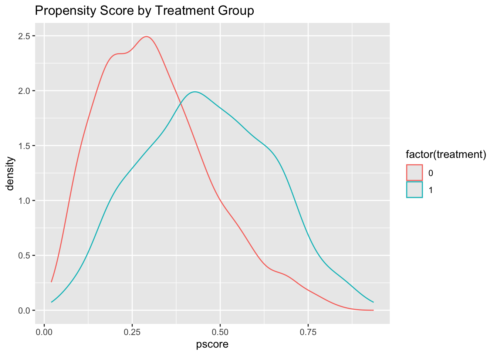
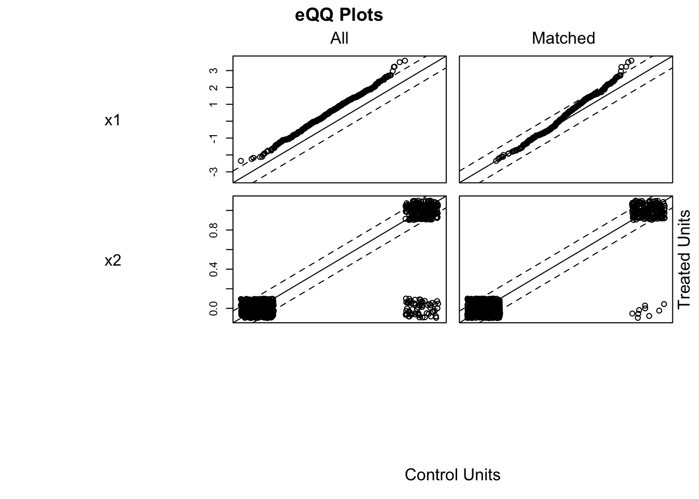

Chapter 3 Causal Inference in Practice II: Propensity Scores, Doubly Robust Estimators, and Inverse Probability Weighting
The previous post investigated the foundations of Randomized Controlled Trials and Regression Adjustment. In real-world observational data, achieving balance on covariates is challenging, and simple regression models rely heavily on conditional independence and correct model specification. Propensity score–based methods, including matching, Inverse Probability Weighting (IPW), and doubly robust estimation, offer suitable alternatives. These methods alleviate some assumptions but introduce others such as positivity and model correctness. In this essay, we articulate their theoretical motivations, derive formal estimators, and demonstrate implementation in R.
3.1 Propensity Score Methods
Propensity score methods serve to emulate a randomized trial by balancing observed confounders across treatment groups. The propensity score \(e(x) = P(D=1 \mid X=x)\) compresses multivariate covariate information into a single scalar. Under the assumption of conditional ignorability (\(Y(1),Y(0) \perp D \mid X\)) and overlap (\(0 < e(x) < 1\)), adjusting for \(e(x)\) suffices to remove bias due to observed covariates.
Formally, denote the propensity score–adjusted estimator:
\[ \widehat{\text{ATE}} = \frac{1}{n} \sum_{i=1}^n \left( \frac{D_i Y_i}{\hat e(X_i)} - \frac{(1-D_i)Y_i}{1 - \hat e(X_i)} \right). \]
In practice, one normally models \(e(x)\) with logistic regression:
library(tidyverse)
set.seed(42)
n <- 2000
x1 <- rnorm(n)
x2 <- rbinom(n,1,0.3)
e <- plogis(-0.5 + 0.8 * x1 - 0.4 * x2)
d <- rbinom(n,1,e)
y <- 3 + 2 * d + 1.2 * x1 - 0.5 * x2 + rnorm(n)
data <- tibble(x1, x2, treatment = d, outcome = y)
ps_model <- glm(treatment ~ x1 + x2, data = data, family = binomial)
data <- data %>% mutate(pscore = predict(ps_model, type = "response"))
ggplot(data, aes(x = pscore, color = factor(treatment))) +
geom_density() +
labs(title = "Propensity Score by Treatment Group")
To estimate ATE by matching:
library(MatchIt)
match_out <- matchit(treatment ~ x1 + x2, data = data, method = "nearest", ratio = 1)
matched <- match.data(match_out)
lm_matched <- lm(outcome ~ treatment, data = matched)
summary(lm_matched)##
## Call:
## lm(formula = outcome ~ treatment, data = matched)
##
## Residuals:
## Min 1Q Median 3Q Max
## -4.5247 -1.0339 0.0542 1.0316 4.3563
##
## Coefficients:
## Estimate Std. Error t value Pr(>|t|)
## (Intercept) 3.13150 0.05470 57.25 <2e-16 ***
## treatment 2.24252 0.07736 28.99 <2e-16 ***
## ---
## Signif. codes: 0 '***' 0.001 '**' 0.01 '*' 0.05 '.' 0.1 ' ' 1
##
## Residual standard error: 1.484 on 1470 degrees of freedom
## Multiple R-squared: 0.3637, Adjusted R-squared: 0.3633
## F-statistic: 840.3 on 1 and 1470 DF, p-value: < 2.2e-16##
## Call:
## lm(formula = outcome ~ treatment, data = data)
##
## Residuals:
## Min 1Q Median 3Q Max
## -4.9920 -1.0709 0.0172 1.0472 4.7084
##
## Coefficients:
## Estimate Std. Error t value Pr(>|t|)
## (Intercept) 2.51663 0.04359 57.73 <2e-16 ***
## treatment 2.85739 0.07186 39.77 <2e-16 ***
## ---
## Signif. codes: 0 '***' 0.001 '**' 0.01 '*' 0.05 '.' 0.1 ' ' 1
##
## Residual standard error: 1.55 on 1998 degrees of freedom
## Multiple R-squared: 0.4418, Adjusted R-squared: 0.4415
## F-statistic: 1581 on 1 and 1998 DF, p-value: < 2.2e-16
Here, coefficients() for treatment gives the ATE among matched units, interpretable under the assumption of balance on \(X\). Diagnostics should include covariate balance checks after matching (e.g., plot(match_out, type="jitter")).
3.2 Inverse Probability Weighting (IPW)
IPW uses propensity score–based weighting to reweight the sample, such that the weighted treated and control groups become exchangeable. Each subject is weighted as:
\[ w_i = \frac{D_i}{\hat e(X_i)} + \frac{1-D_i}{1-\hat e(X_i)}. \]
Then,
\[ \widehat{\text{ATE}}_{\text{IPW}} = \frac{\sum_i w_i Y_i}{\sum_i w_i}. \]
IPW estimates the ATE without explicit modeling of \(E[Y \mid D, X]\), but hinge critically on correctly specified propensity scores and stable overlap.
## Loading required package: grid## Loading required package: Matrix##
## Attaching package: 'Matrix'## The following objects are masked from 'package:tidyr':
##
## expand, pack, unpack## Loading required package: survival##
## Attaching package: 'survey'## The following object is masked from 'package:graphics':
##
## dotchartdata$wt <- with(data, ifelse(treatment == 1, 1/pscore, 1/(1-pscore)))
design <- svydesign(ids = ~1, weights = ~wt, data = data)
ipw_mod <- svyglm(outcome ~ treatment, design = design)
summary(ipw_mod)##
## Call:
## svyglm(formula = outcome ~ treatment, design = design)
##
## Survey design:
## svydesign(ids = ~1, weights = ~wt, data = data)
##
## Coefficients:
## Estimate Std. Error t value Pr(>|t|)
## (Intercept) 2.86192 0.05166 55.40 <2e-16 ***
## treatment 1.84788 0.09692 19.07 <2e-16 ***
## ---
## Signif. codes: 0 '***' 0.001 '**' 0.01 '*' 0.05 '.' 0.1 ' ' 1
##
## (Dispersion parameter for gaussian family taken to be 2.628476)
##
## Number of Fisher Scoring iterations: 2The coefficient on treatment gives the IPW-estimated ATE. One must check for extreme weights using summaries (summary(data_obs$wt)) and consider trimming.
3.3 Doubly Robust Estimators
Doubly robust estimators combine outcome modeling and propensity weighting so that estimation remains consistent if either model is correctly specified. The canonical form is:
\[ \widehat{\text{ATE}}_{\text{DR}} = \frac{1}{n} \sum_{i=1}^{n} \left[ m_1(X_i) - m_0(X_i) + \frac{D_i(Y_i - m_1(X_i))}{\hat{e}(X_i)} - \frac{(1 - D_i)(Y_i - m_0(X_i))}{1 - \hat{e}(X_i)} \right] \]
where \(\hat m(D, X)\) is an estimated regression of outcome on treatment and covariates.
om_mod <- lm(outcome ~ treatment + x1 + x2, data = data)
data$mu1_hat <- predict(om_mod, newdata = transform(data, treatment = 1))
data$mu0_hat <- predict(om_mod, newdata = transform(data, treatment = 0))
# Doubly robust ATE
dr_ate <- with(data, mean((treatment/pscore - (1-treatment)/(1-pscore))*(outcome - (treatment*mu1_hat + (1-treatment)*mu0_hat)) + mu1_hat - mu0_hat))
dr_ate## [1] 1.903413This dr_ate estimate is doubly robust: consistent if either propensity or outcome model is correct. Practical use involves bootstrapping for variance.
3.4 Integrative Interpretation
Propensity scores adjust for observed confounders in a manner motivated by design, yielding a pseudo-randomized experiment. IPW pushes this further by weighting, creating a synthetic population. Doubly robust methods guard against misspecification of either the weighting model or the outcome model—ensuring valid ATE estimation under broader conditions.
However, each method remains anchored in core assumptions: ignorability, overlap, and model correctness. Diagnostics—such as balance checks after matching/IPW, weight summaries, and residual/outcome-model validation—are essential before causal claims are made.
3.5 Summary Table
| Method | Model Requirement | Consistency If | Estimator Formula | Primary Strength |
|---|---|---|---|---|
| Propensity Score Matching | Logistic for \(e(x)\) | Propensity correctly estimated | Difference in means after matching | Balances covariates; design mimicry |
| Inverse Probability Weighting (IPW) | Logistic for \(e(x)\) | Propensity correctly estimated | Weighted regression or weighted mean difference | Creates reweighted, exchangeable sample |
| Doubly Robust Estimator | Logistic for \(e(x)\) or outcome \(m(D,X)\) | Either model correctly specified | ATE combining weighted residuals and conditional means | Robust to misspecification, efficient |
3.6 Conclusion
This post has advanced our series by exploring methods that bridge the gap between randomization and modeling. Propensity scores, IPW, and doubly robust estimators offer complementary strategies for tackling confounding, each accompanied by unique trade‑offs in terms of assumptions, stability, and interpretability. The next installment will explore Matching, Difference-in-Differences, and Instrumental Variables, offering further depth and methods for complex real-world data.
3.7 References
Rosenbaum, P. R., & Rubin, D. B. (1983). The central role of the propensity score in observational studies for causal effects. Biometrika, 70(1), 41–55.
Robins, J. M., & Rotnitzky, A. (1995). Semiparametric efficiency in multivariate regression models with missing data. Journal of the American Statistical Association, 90(429), 122–129.
Bang, H., & Robins, J. M. (2005). Doubly robust estimation in missing data and causal inference models. Biometrics, 61(4), 962–973.
Hernán, M. A., & Robins, J. M. (2020). Causal Inference: What If. Chapman & Hall/CRC.